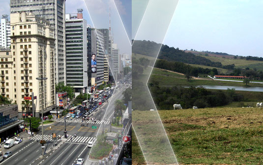

Qual é a importância do campo para a cidade?
Cabe ao campo a produção dos alimentos e de matérias-primas utilizadas pela indústria. As cidades se urbanizam, e tem como função principal a atividade
industrial e o setor de serviços. Nessa atividade veremos a importância da relação entre o campo e a cidade e como isso influencia nossas vidas., initial
-scale=1.0">
A cidade não apenas controla e comercializa a produção do campo, mas também passa a transformá-la e agregar valor à esta, expandindo sua esfera de dominação.
O campo, que até então era praticamente autossuficiente, se vê dependente da cidade, em alguns casos, até para compra de produtos básicos de vida, como alimentos.
Qual é a diferença entre o trabalho do campo e da cidade?
Em seguida, indique que no campo predominam atividades relacionadas ao cultivo da terra, a criação de animais e ao extrativismo e na cidade predominam as atividades de
prestação de serviços, comércio e transformação dos produtos trazidos do campo.
Qual é a importância do campo na vida das pessoas?
O campo possui grande importância no fornecimento de frutas, legumes e verduras, além de outros recursos naturais que auxiliam na produção de energia, água e equipamentos
humanos diversos. O espaço rural também tem sua importância na conservação de paisagens naturais, como as florestas.
O que atraiu as pessoas do campo para a cidade?
Êxodo rural é o processo de migração de pessoas do campo para a cidade. Muitas causas podem ser associadas a ele, como a modernização da produção agrícola, a concentração
fundiária, a busca por melhores condições de vida e melhores empregos, entre outros fatores.
A movimentação do campo para a cidade tem, tradicionalmente, causas ligadas à busca por melhores condições de emprego e renda. A modernização do campo e a industrialização
das cidades são causas importantes do êxodo rural.
O que encontramos no campo e na cidade?
Nas cidades há formas para as pessoas se distraírem: cinemas, teatro, zoológico, parques, televisão, etc. No campo, onde a vida é mais simples e não existem muitas escolhas
para diversão, as pessoas se divertem pescando, andando a cavalo, tomando banho de rio, cachoeira, frequentando rodeios, bailes, etc.
Por meio dos meios de transporte, pessoas e mercadorias se deslocam de um lugar para outro, do espaço urbano para o rural e do rural para o urbano. Além disso, por causa dos
meios de comunicação, as notícias também circulam entre o campo e a cidade.
